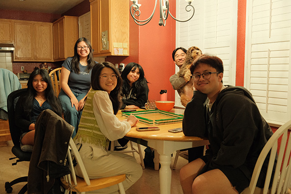
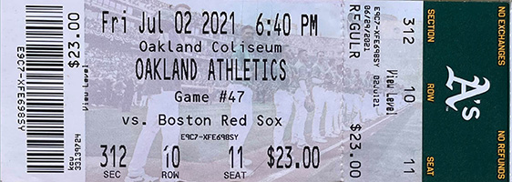

I found this article to be a really beginner-friendly guide to the core game-design principles. The 7 core principles consisted of setting clear goals, creating engaging core mechanics, maintaining game flow, balancing the game, offering rewards, playtesting, and sound design. While all of these are essential to the design of an engaging and efficient game experience, I found that setting clear goals and maintaining game flow were the two most significant to me. Mapping out the goals helps build a strong foundation and when it gets confusing throughout the game design process, referring back to the basic goals for the player is a great way to get back on track. It also gives the player some things to look forward to and a challenge to strive to complete.
The game flow is all about maintaining a fluid narrative, seamless experience, and easily comprehensible functions. This will dictate how immersed a player feels and whether they remain engaged or become frustrated. If transitions between levels, mechanics, or story beats feel abrupt or confusing, it can pull the player out of the experience. In many ways, flow connects directly to the player’s emotional journey—when done well, it creates a rhythm of challenge and reward that keeps players motivated. Lastly, I also liked how the article emphasized playtesting as an ongoing process rather than a final step. It emphasizes the idea that good design is iterative and constantly improving. No matter how clear the goals or how polished the mechanics may seem, observing real players interact with the game often reveals gaps that designers might overlook.
One of the images that I chose was a group picture of my friends and I playing mahjong during our Mahjong Thursdays. There are five of us at the table and surrounding the tiles are bowls of snacks as we play, snack, and laugh around the table. The atmosphere of playing in a lived-in home instead of a college apartment makes the image feel nostalgic and warm.
Each of us are from different ethnic backgrounds and due to this, we all learned how to play mahjong differently—whether it be the Cantonese, Taiwanese, Filipino, or Japanese versions. However, regardless of the different rules we learned, at the table, we unite and simply play. Mahjong is a universal language. This image is also a poetic way of showing how despite our different cultures, we’re all gathered at the same table as a result of our elders individually passing down this game to us. It’s the passage of critical thinking skills and it’s a universal experience that transcends cultures.
Using diversity as a factor, I’m thinking of using different tiles to represent each of us around the table and once these tiles are interacted with, it brings up individual pictures of the players and shares what style they play and how they came to learn how to play. Cultural identity has always been an interest of mine and I've always wanted to learn more about myself. Mahjong is something that I hold close to myself as part of my identity and I'm happy to share this part of myself with others who also hold mahjong as part of their cultural identity.

Derick Lapurga, 2026
The image that my partner showed me was an image of an Oakland A’s baseball game ticket. As most tickets are virtual, it’s refreshing to see an “old-school” paper ticket. The primary contents on it include the date, time, and location of the event, the cost of the ticket, the attendee’s seating arrangement, and a barcode. The barcode is probably to be scanned upon arrival at the game, but I think the mystery of the barcode could also be a pathway to another screen. The different information could also be pathways to other screens to convey the narrative. For instance, by hovering over the venue name, there could be an image of the stadium or by hovering over the seat, there could be a picture of them sitting in their seat.

Shu Yin Yu, 2015
Close Reading and Visual Thinking Skills
According to Michael Gonchar’s article, close reading and visual thinking can be improved through the analysis of photography through tens tips. Overall, all ten tips summarized encourage people to look closely into details, ask deep questions, make connections, start conversations, and consider all ways in which things can be viewed. Something interesting that I realized was that we are oftentimes prone to looking at images, and subconsciously making assumptions due to our strong sense of reality which in turn, limits what we see. When we stick to the details of what we see and consider all possible contexts, it allows us to see more and to understand different possibilities.
One of the websites that I found to have an impressive integration of photos and motion was Aramco's “Shoot for the Future” initiative website. Its primary strength was that it attracted and maintained engagement. Even without knowing what the website was about and what it was truly saying, it didn’t matter as much to me because all I wanted to do was keep scrolling to see new animations and transitions. However, I feel like this was also its downfall. The theatrics and fun took away from the contents from the site. Therefore, if the website was regarding something serious, people would feel less enticed to read it fully as they’ll just be curious about what more animations lie ahead.
From Naema Baskanderi’s article regarding modal windows, I learned that they are best for applying when you want to capture a user’s attention right away, receive user input, display additional information both in or not in context. By interrupting the user’s user-flow with a pop-up modal screen, it immediately brings their attention to the information, instructions, and action-items. They can be used to display additional information both associated with or independent from the parent page.
The design of the modal window determines the user’s task completion. The following six features ensure a quality modal window experience:
1. The escape hatch should give the user a way out such as through a cancel or close button.
2. The descriptive title provides context as to where the user was navigated or re-routed to.
3. Buttons should be labeled with simple names or iconography to describe the action the user can take.
4. In order to maintain context, the modal window should not be too big, but it should not be too small to the point it’s inaccessible.
5. A lightbox effect should be used where the background is darkened to bring focus to the modal to insinuate that the parent page is temporarily disabled.
6. Have the pop-up modal be user-initiated and don’t surprise the user with an unexpected pop-up.
Overall, I do agree with all of these rules of thumb. They make the experience comfortable and intuitive for the user. The user is given the option to leave the modal window and is void of any pressures to engage with it. However, if they were to choose to interact with it, minimal text and visual language provide simple and comprehensible context for its purpose. uxplanet.org
Best Practices for Form Design
When working with forms, the ultimate objective is to minimize cognitive load, confusion, and to design for the optimal user experience. I agree with the rule of thumb that less is oftentimes more. Too many features, steps, and words deter people from wanting to interact with an interface. The way in which the information is formatted or arranged gauges how encouraged people will feel to engage with it. Being intentional with your language is also important as it can guide the user through the process for an easy interaction.
One thing that I don’t 100% agree with was when the article mentioned not using multiple columns and sticking to single columns. I don’t necessarily believe that multiple columns break up a flow. I can understand the logic behind that statement, but I think columns can work without disrupting the user-experience in some cases. They section off different parts of the reading and make it easier to break down the contents. Sometimes for layout purposes, columns help in arranging aesthetics that also encourage people to engage with the interface. uxdesign.cc
The duolingo website has a really nice website form for when one is first getting started with the program such as creating a profile or declaring their current fluency level in a chosen language. Not only is it really brief, but it uses icons and cards to make the interaction fun like a game. The instructions of each question are direct and it doesn’t ask all its questions at once. There is a progress bar at the top of the screen to give the user a gauge of how many more questions to expect, but otherwise, questions are asked one at a time and I think this does a good job in reducing cognitive load. duolingo.com